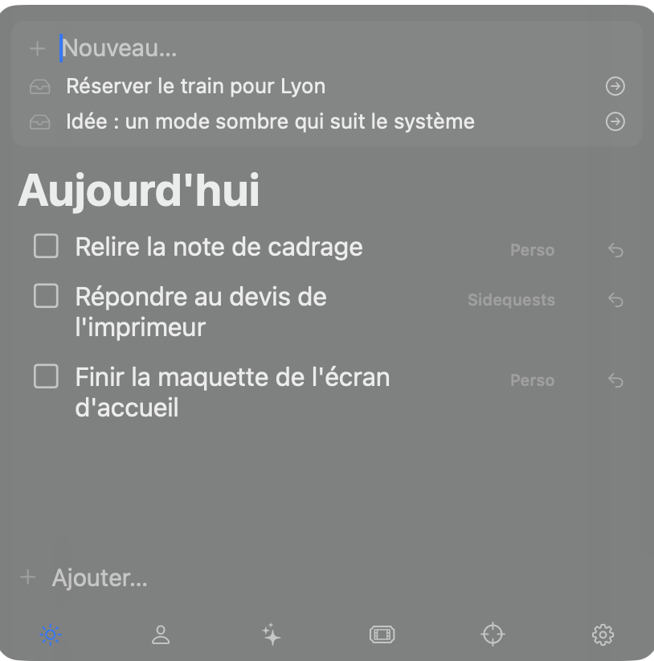

Missions
Une liste de tâches qui flotte au-dessus de tout le reste.
macOS 26 ou plus récent · gratuit · aucun compte
Télécharger pour macOS
Ce que ça fait
Une palette, appelée d'un raccourci
⌥ droite + ⌘ droite pressées ensemble affichent ou masquent la palette, depuis n'importe quelle app. Elle suit tous les bureaux, ne recouvre pas le plein écran et ne vole jamais le focus : la fenêtre dans laquelle vous tapiez reste celle dans laquelle vous tapez.
Des listes, et une journée
Autant de listes que vous en créez, chacune avec son onglet. L'onglet Aujourd'hui rassemble ce que vous avez décidé de faire maintenant ; ce qui est coché disparaît au changement de jour, et ce qui ne l'est pas reste. Les sous-tâches tiennent sur un niveau, volontairement.
Un mode Focus qui met les autres apps en retrait
Une tâche peut ouvrir une session de focus. Les apps que vous n'avez pas autorisées pour la session sont alors recouvertes d'un voile tant qu'elles sont au premier plan. Rien n'est jamais fermé ni quitté : le voile se lève dès que la session s'arrête.
Ce qu'il faut savoir avant d'installer
Une permission au premier lancement
macOS ne laisse entendre un raccourci global qu'aux apps autorisées. Missions demande donc la permission Accessibilité, et rien d'autre. Refusée, l'app fonctionne toujours : le raccourci ne marche alors que quand la palette a déjà le focus, et un clic sur l'icône du Dock la ramène.
Vos tâches ne quittent pas votre Mac
Pas de compte, pas de serveur, pas de statistiques d'usage. Tout vit dans un fichier local,
dans ~/Library/Application Support/Missions. Désinstaller, c'est jeter l'app
à la corbeille et supprimer ce dossier.
Les mises à jour se font toutes seules
L'app vérifie d'elle-même s'il existe une version plus récente et propose de l'installer. Elle est signée et notarisée par Apple, donc elle s'ouvre sans avertissement de sécurité.